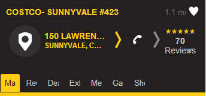

HTML Poi Refactoring
What's new and the performance
XinRong Liu
July 9, 2012
XinRong Liu
July 9, 2012
"<!DOCTYPE html>"
<div id="addrContainer">
<div id="car"align="center">
<div class="carIcon"></div>
</div>
<div id="addrArrow" class="driveArrowIcon"></div>
<div id="addr">
<div id="firstLine" class="oneLine"></div>
<div id="lastLine" class="oneLine"></div>
</div>
</div>
#addrContainer { float:right; width:75%;}
#addrArrow { float:right; }
#car { float:left; width:22%; }
#addr { float:left; width:78%; }
<div class="movieTimeContainer">
<div class="movieName oneLine">Madagascar 3: Europe's Most Wanted</div>
<div class="movieTime">
<span class="passedMovieTime">11:15am</span>
<span class="separator"> | </span>
<span class="currentMovieTime">11:55am</span>
<span class="separator"> | </span>
<span class="futureMovieTime">1:50pm</span>
</div>
<div class="movieBuyContainer">
<div class="movieBuy"> BUY </div>
</div>
</div>
<div class="focusedTab">
<div class="leftTabImageFocused"></div>
<div class="rightTabImageFocused"></div>
<div class="centerTabImageFocused">
<div class="tabName oneLineClip"></div>
</div>
</div>
<div id="ratings">
<span id="ratingStar1">
<span class="smallFullStar"></span>
</span>
<span id="ratingStar2">
<span class="smallFullStar"></span>
</span>
<span id="ratingStar3">
<span class="smallFullStar"></span>
</span>
<span id="ratingStar4">
<span class="smallFullStar"></span>
</span>
<span id="ratingStar5">
<span class="smallFullStar"></span>
</span>
</div>
<div id="refTab" class="tabItem">
<div class="focusedTab">
<div class="leftTabImageFocused"></div>
<div class="rightTabImageFocused"></div>
<div class="centerTabImageFocused">
<div class="tabName oneLineClip"></div>
</div>
</div>
<div class="unfocusedTab" style="display:none">
<div class="leftTabImage"></div>
<div class="rightTabImage"></div>
<div class="centerTabImage">
<div class="tabName oneLineClip"></div>
</div>
</div>
</div>
</div>
var refTab = document.querySelector("#refTab");
var tabItemDiv = refTab.cloneNode(true);
<div id="tabPages">
<%@ include file="poiMainTab.jsp"%>
<%@ include file="reviewsTab.jsp"%>
<%@ include file="menuTab.jsp"%>
<%@ include file="dealsTab.jsp"%>
<%@ include file="extraTab.jsp"%>
<%@ include file="gasPriceTab.jsp"%>
<%@ include file="showtimeTab.jsp"%>
</div>
<div id="tabPages">
<%@ include file="poiMainTab.jsp"%>
<%@ include file="reviewsTab.jsp"%>
<%@ include file="menuTab.jsp"%>
<%@ include file="dealsTab.jsp"%>
<%@ include file="extraTab.jsp"%>
<%@ include file="gasPriceTab.jsp"%>
<%@ include file="showtimeTab.jsp"%>
</div>
├─ATTNAVPROG │ └─css (Contains layout css) │ ├─poidetail.css (layout for poidetail page) │ ├─dealstab.css (layout for poidetail page) │ ├─gaspricetab.css (layout for poidetail page) │ ├─menutab.css (layout for poidetail page) │ ├─poimaintab.css (layout for poidetail page) │ ├─reviewstab.css (layout for poidetail page) │ ├─showtimetab.css (layout for poidetail page) │ ├─addreview.css (layout for addreview page) │ └─viewreview.css (layout for viewreview page) │ └─image │ ├─poidetail_image.css (poidetail's images css) │ ├─addreview_image.css (addreview's images css) │ ├─viewreview_image.css (viewreview's images css) │ ├─large (Large images folder) │ ├─medium (Medium images folder) │ └─xlarge (Xlarge images folder) ├─SCOUTPROG │ ...... ├─SCOUTUSPROG │ ...... └─SNNAVPROG │ ......
#top
{
padding:0.6em 3% 0 3%;
}
.separator
{
float:left;
width:2px;
height:13.3em;
background:-webkit-gradient(linear, left top, left bottom,
from(rgb(247,247,247)),color-stop(0.5,rgb(198,197,197)),
to(rgb(247,247,247)));
}
.leftTabImageFocused
{
background:url(medium/tab_big.png) no-repeat 0px -185px;
width:8px;
height:37px;
}
.centerTabImageFocused
{
background:url(medium/tab_big.png) repeat-x 0px -148px;
height:37px;
margin-left:8px;
margin-right:8px;
}
.rightTabImageFocused
{
background:url(medium/tab_big.png) no-repeat 0px 0px;
width:8px;
height:37px;
}
| Portrait | Landscape |
 |
 |
<div id="addrContainer">
<div id="car"align="center">
<div class="carIcon"></div>
</div>
<div id="addrArrow" class="driveArrowIcon"></div>
<div id="addr">
<div id="firstLine" class="oneLine"></div>
<div id="lastLine" class="oneLine"></div>
</div>
</div>
| AT&T | Scout |
#car { float:left; width:22%; }
#addr { float:left; }
#addrArrow { display:none; }
|
#car { display:none; }
#addr { float:left; }
#addrArrow { float:right; }
|
.yelpContainer
{
background-image: url(data:image/png;base64,
iVBORw0KGgoAAAANSUhEUgAAAAUAAAAFCAIAAAACDbGyAAAAAXNSR
0IArs4c6QAAAAlwSFlzAAALEwAACxMBAJqcGAAAAAd0SU1FB9wGFgA
5D80hGzwAAABbSURBVAjXAVAAr/8A/9Is/+mY///9//75/+uhAf/tq
QAKMQADDQDsoQD++gIAD0kAAQIA9McA+uQABRQA///9/+eN/9lL//
C7//vuAf/nkQD/+QAEFAAQRwD77B26K1gJjcz0AAAAAElFTkSuQmCC);
}
@media screen and (orientation:portrait) {
#addrContainer {
float:right;
width:75%;
}
#addrArrow {
float:right;
}
...
}
@media screen and (orientation:landscape) {
#addrContainer {
float:left;
width:40%;
}
#addrArrow {
float:right;
}
...
}
@media screen and (max-device-width:320px) and (orientation:portrait)
, screen and (max-device-width:480px) and (orientation:landscape)
{
...
}
@media screen and (min-device-width:321px) and (max-device-width:799px) and (orientation:portrait)
, screen and (min-device-width:481px) and (max-device-width:960px) and (orientation:landscape)
{
...
}
@media screen and (min-device-width:800px) and (orientation:portrait)
, screen and (min-device-width:961px) and (orientation:landscape)
{
...
}
@media screen and (-webkit-max-device-pixel-ratio:1.4) {
...
}
@media screen and (-webkit-min-device-pixel-ratio:1.5) {
...
}
.userIcon {
background:url(large/default_photo_icon_unfocused.png) no-repeat;
width:32px;
height:32px;
background-size:32px 32px;
}
<link rel='stylesheet' media='screen and (min-device-width: 320px)
and (max-device-width: 480px) and (orientation: portrait)' href='css/medium.css' />
<link rel='stylesheet' media='screen and (min-device-width: 481px)
and (max-device-width: 960px) and (orientation: portrait)' href='css/large.css' />
/*
This is the only exception we define non image style here.
Because the UI design is not consistent in xlarge screen size.
*/
.tabName
{
padding-top:0.4em;
}
function namespace(namespaceString) {
var parts = namespaceString.split('.'),
module = window,
currentPart = '';
for(var i = 0, length = parts.length; i < length; i++) {
currentPart = parts[i];
module[currentPart] = module[currentPart] || {};
module = module[currentPart];
};
return module;
};
namespace("com.telenav.map");
com.telenav.map.StaticMap = function(mapDiv, mapOptions)
{
...
}
com.telenav.module.PoiDetailController = function()
{
//private variables
var model;
var view;
//private functions
function onDeviceReady() {}
...
}
com.telenav.util.Servlets = (function()
{
//private variables
var ACTION_DUMMY_DATA = "dummyDataAction.do";
//private functions
function getAdsPoiCriteria(adsId, categoryId){
...
};
return {
getAdsMainServlet: function(adsId, categoryId)
{
var criteria = getAdsPoiCriteria(adsId, categoryId);
var url = ServerConfig.rootPath + ACTION_POIDETAIL + "?operateType=mainnew&jsonStr=" + JSON.stringify(criteria) + "&" + clientInfo.toString();
return url;
},
...
}
})();
com.telenav.util.Log = function() {
};
//debug log
com.telenav.util.Log.d = function(msg) {
console.log("[BSERVER][D]--" + msg);
};
//warning log
com.telenav.util.Log.w = function(msg) {
console.log("[BSERVER][W]--" + msg);
};
//error log
com.telenav.util.Log.e = function(msg) {
console.log("[BSERVER][E]--" + msg);
};
com.telenav.module.PoiDetailController = function()
{
var model;
var view;
this.init = function() {
model = new com.telenav.module.PoiDetailModel();
view = new com.telenav.module.PoiDetailView(poiDetailObj, onClick, onChangeTab);
...
}
function onClick(div, clickFunc) {};
}
com.telenav.module.PoiDetailModel = function() {
this.load = function(){};
this.save = function(){};
}
com.telenav.module.PoiDetailView = function(poiDetailObj, onClick, onChangeTab) {
this.showPoiMain = function(poiMainObj) {};
...
}
 |
 |
|
Old Page
Max Depth: 11
|
New Page
Max Depth: 8
|